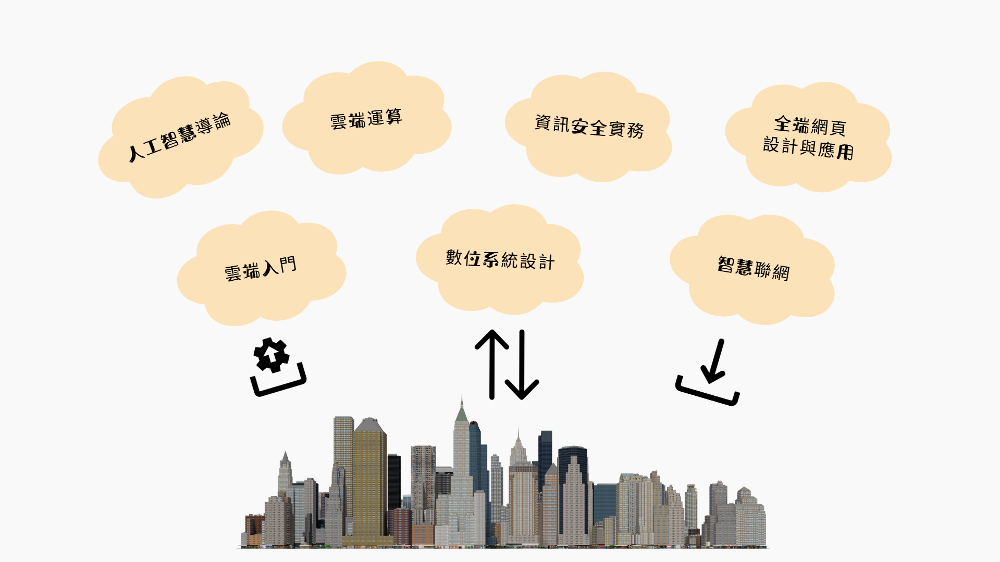

課程介紹
人工智慧、物聯網與雲端運算的出現，帶來了生活的變革。物聯網簡單來說，就是讓物品能夠連接到網路。透過嵌入式系統、感測器等裝置來蒐集相關的數據，並利用網際網路來接收、儲存數據並加以分析，甚至能夠回傳指令來控制物品執行某些動作。
隨著蒐集的資料量龐大，傳統的數據分析工具逐漸不敷使用，這時需要借助人工智慧（AI）的力量，將大數據進行再利用、分析並轉化，從而發揮出最大的收益。這通常需要使用工作站或伺服器等專門處理高工作負載的電腦，以支援高速運算。因此，雲端服務也成為不可或缺的要角。
智慧物聯與雲端服務特色課程，正是應用資訊科技發展的新趨勢，涵蓋人工智慧、物聯網與雲端服務三大面向。課程以應用為導向，並採用專題導向學習（PBL）的教學方式，培養學生實際動手解決問題的實務能力與就業即戰力。
課程架構

領航員
- 胡碩誠 老師:
- 范修維 老師:
- 許智舜 老師:
- 顏宏旭 老師:
電腦網路、無線與感測網路、物聯網與區塊鏈、人工智慧應用
網路管理、資訊安全、雲端服務
智慧聯網、無線網路、行動計算、無線個人通訊系統
健康照護工程、微/奈米機器網路、人工智慧及機器學習、無線視覺感測網路、物聯網、雲端/近端運算